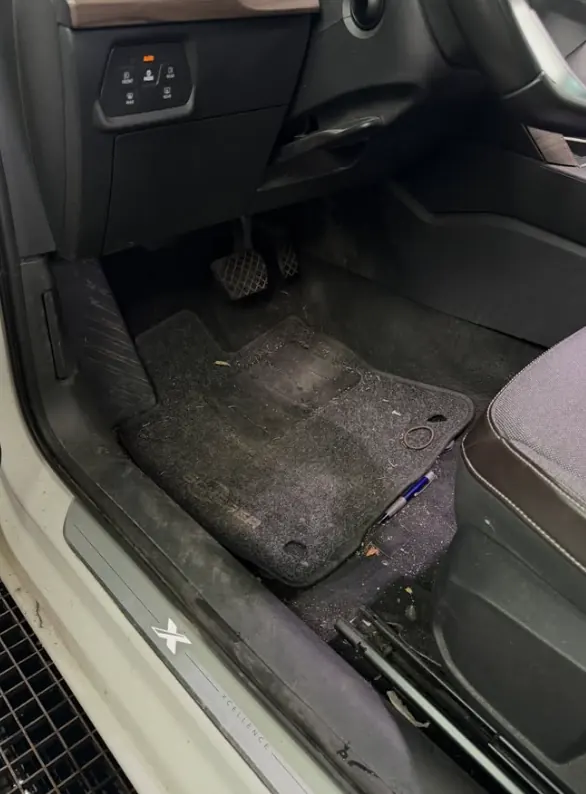
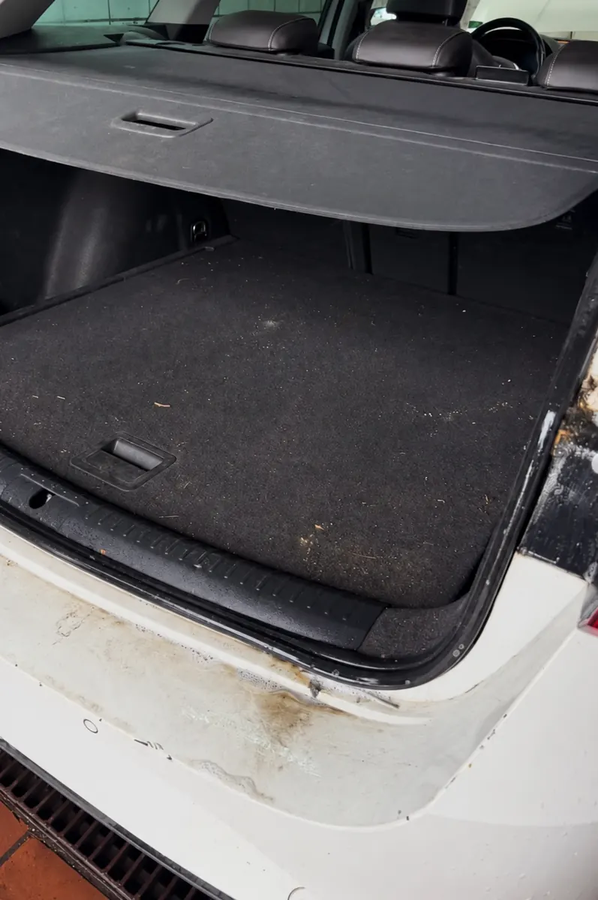
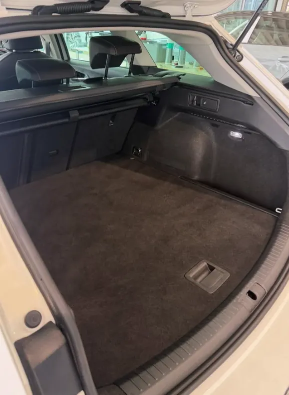
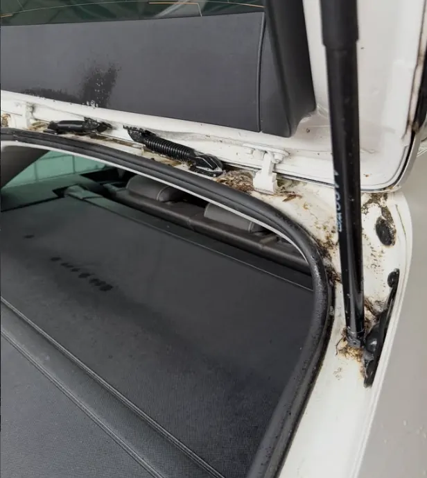
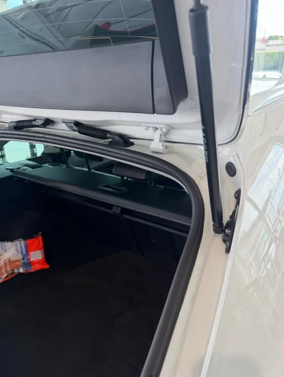
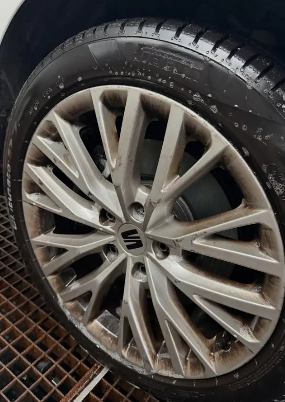
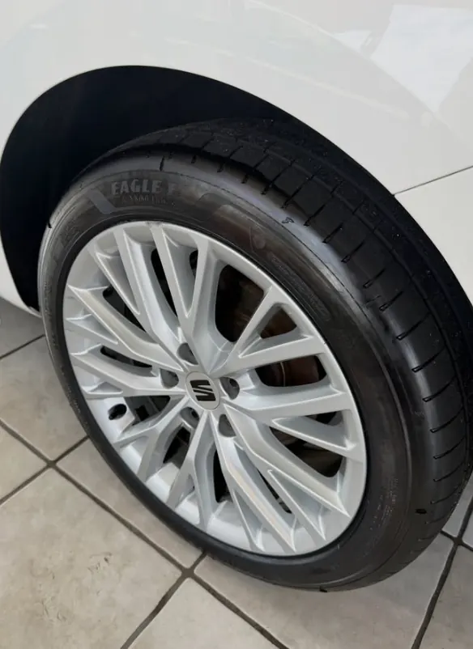
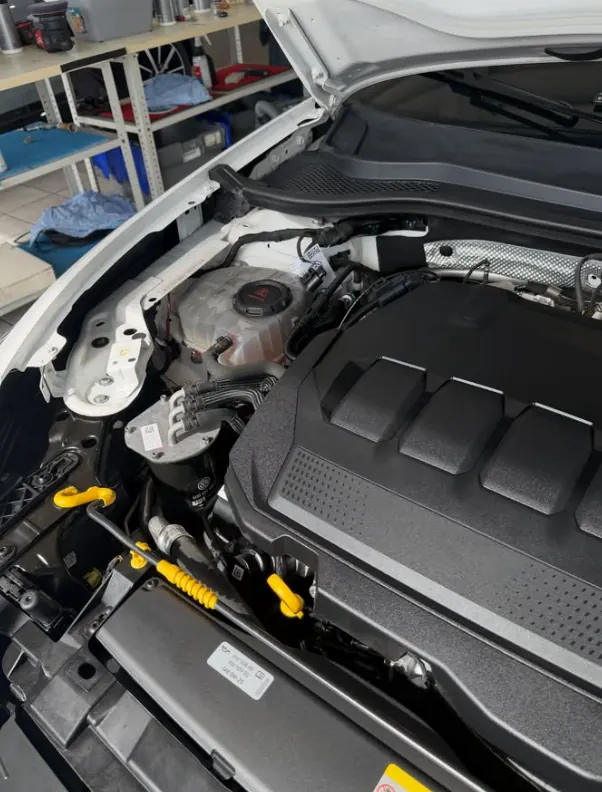
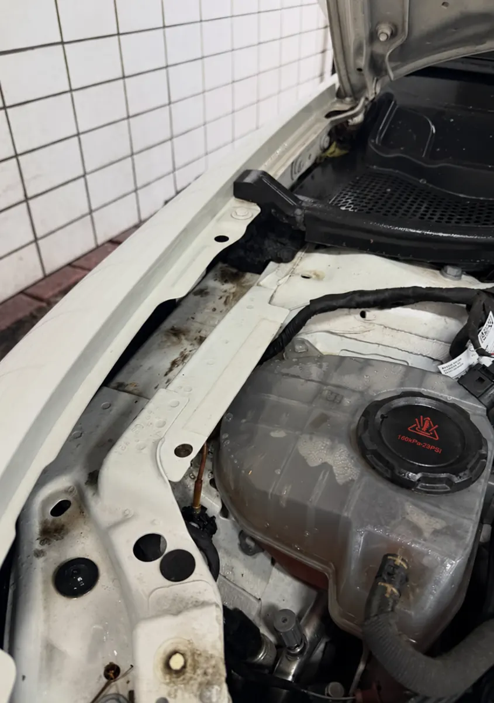

Leistung
Fahrzeugaufbereitung in Walldorf
Innen und außen mit Liebe zum Detail: Wir bringen Ihr Auto wieder in einen Zustand, in dem Sie sich rundum wohlfühlen – ob als regelmäßige Pflege oder als gründliche Komplettaufbereitung.
Gründlich, sorgfältig, persönlich abgestimmt
Jedes Fahrzeug ist anders. Deshalb schauen wir uns Ihr Auto zuerst gemeinsam mit Ihnen an und besprechen, was es braucht: eine frische Innenreinigung, eine gründliche Außenpflege oder die komplette Aufbereitung von innen und außen.
Typische Anlässe
- Regelmäßige Pflege für den Alltag
- Vor dem Verkauf – für einen besseren ersten Eindruck
- Vor der Leasingrückgabe
- Nach dem Urlaub, mit Kindern oder Haustieren
- Für besondere Fahrzeuge und Sportwagen
Unsere Pflegepakete
Wählen Sie zwischen Innenreinigung, Außenpflege und Komplettpflege. Ergänzend bieten wir zum Beispiel eine Motorraumwäsche oder eine Ozonbehandlung gegen Gerüche an.

Vorher & Nachher
Echte Ergebnisse

Vorher Nachher
Nachher
Vorher
Nachher
Vorher
Nachher
Vorher
Nachher
Vorher
NachherHäufige Fragen
Wie lange dauert eine Fahrzeugaufbereitung?
Das hängt vom Umfang und vom Zustand des Fahrzeugs ab. Den genauen Zeitrahmen sprechen wir bei der Terminvereinbarung mit Ihnen ab.
Was kostet eine Fahrzeugaufbereitung?
Der Preis richtet sich nach Fahrzeuggröße, Zustand und gewünschtem Umfang. Rufen Sie uns an oder schicken Sie uns ein Foto per WhatsApp – dann sagen wir Ihnen vorab, womit Sie rechnen können.
Bekomme ich kurzfristig einen Termin?
Oft ja. Viele unserer Kunden haben kurzfristig einen Termin bekommen. Am besten fragen Sie einfach telefonisch oder per WhatsApp an.
Lohnt sich eine Aufbereitung vor dem Autoverkauf?
Ein gepflegtes Fahrzeug macht beim Verkauf einen deutlich besseren Eindruck. Viele Kunden lassen ihr Auto deshalb vor dem Verkauf oder der Leasingrückgabe komplett aufbereiten.
Weitere Leistungen
Oder schauen Sie in die Leistungsübersicht.
Was dürfen wir für Ihr Auto tun?
Rufen Sie uns an oder schreiben Sie uns per WhatsApp – wir besprechen persönlich, was Ihr Fahrzeug braucht.